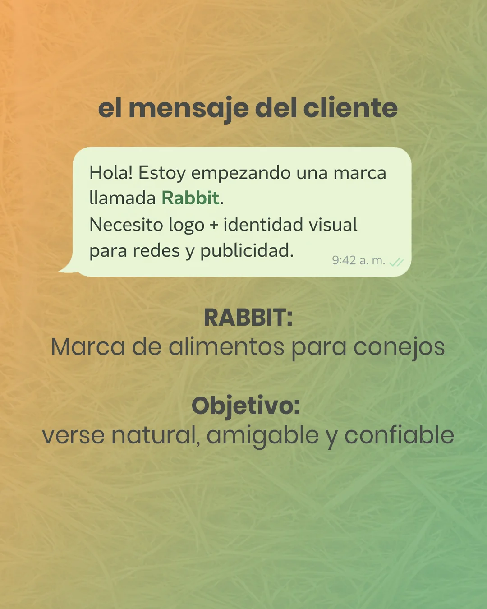
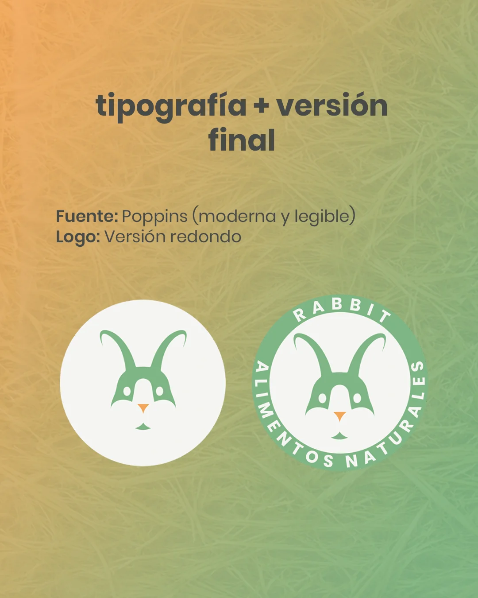
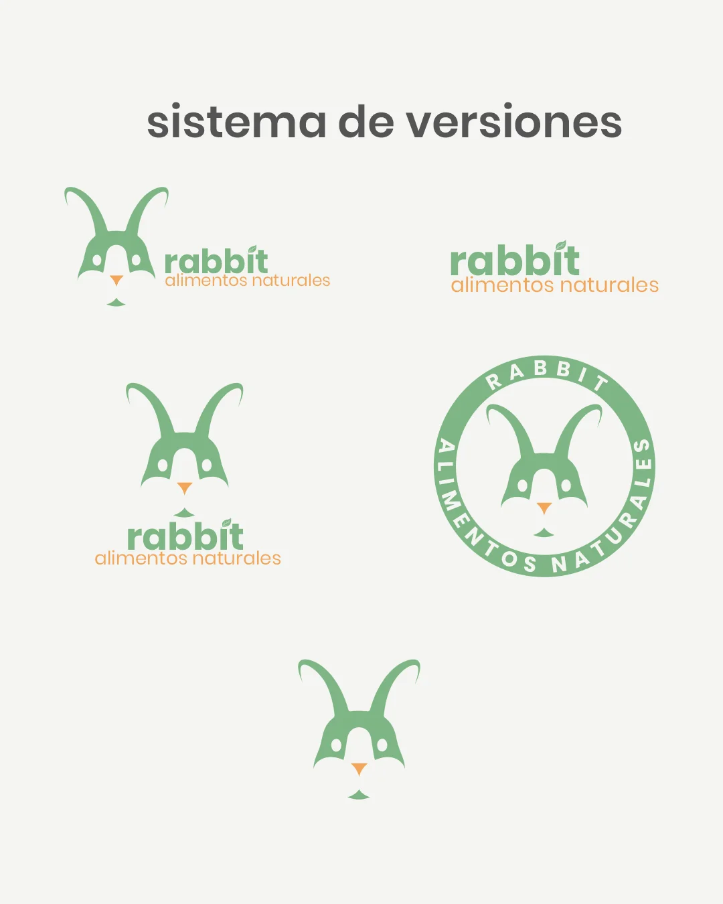
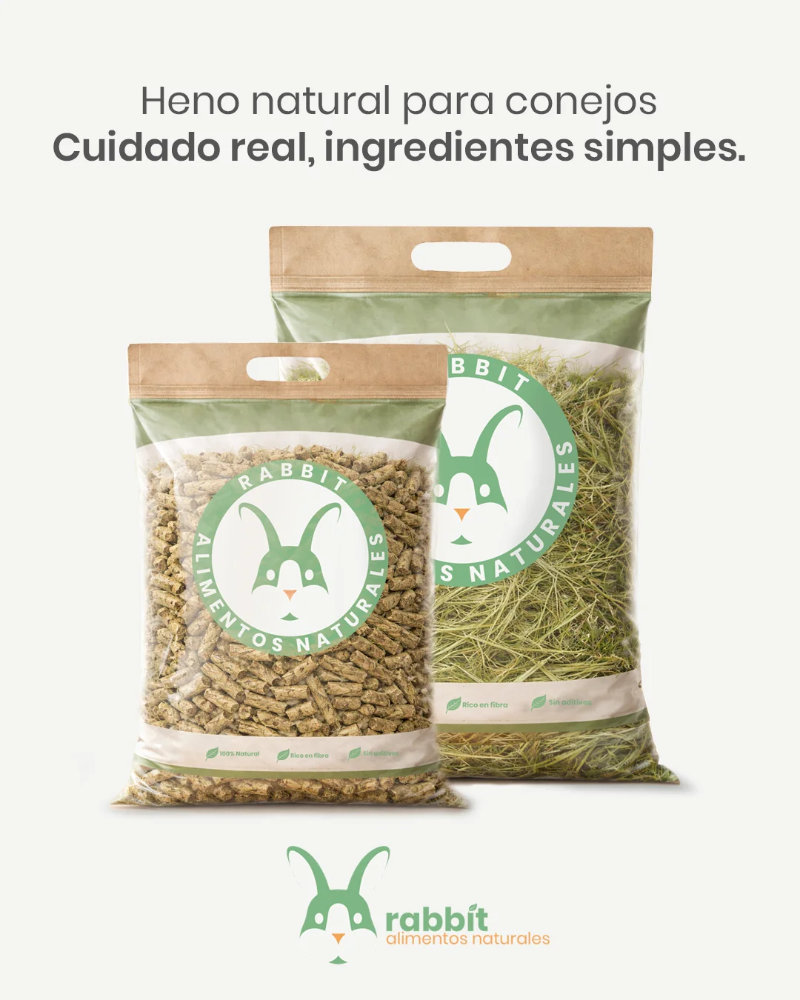
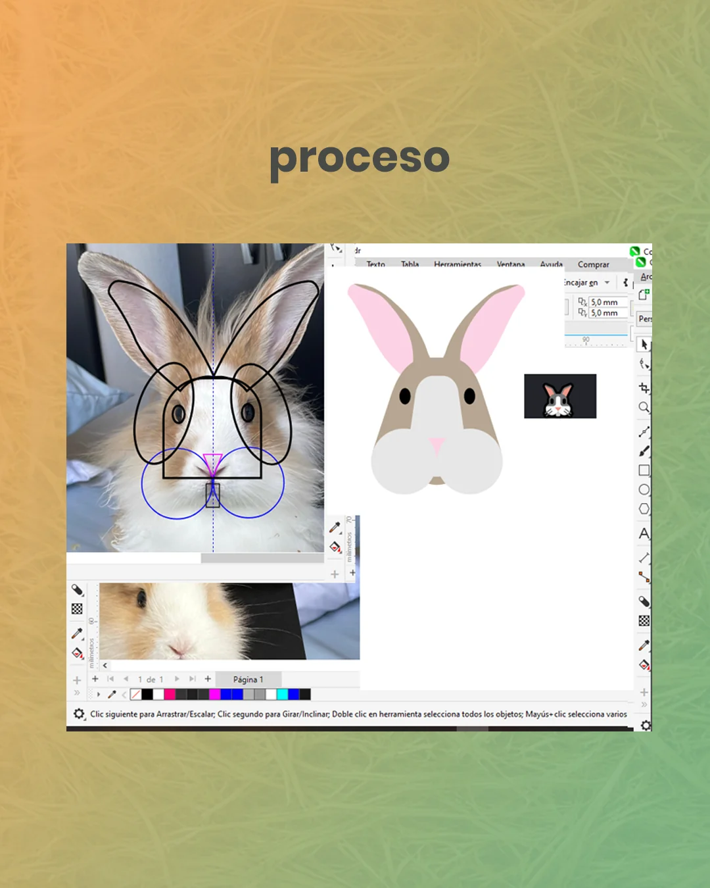
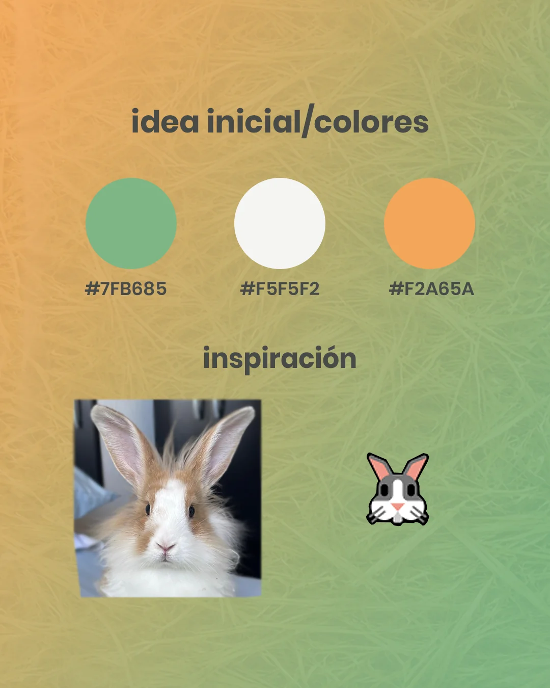

Rabbit - Alimentos Naturales
Branding e Identidad.

Sobre el Proyecto RABBIT es un concepto de identidad y packaging enfocado en la nutrición consciente para pequeñas mascotas. El diseño busca transmitir transparencia y cuidado real a través de una estética limpia y natural. Claves del Diseño Identidad: Imagotipo orgánico en verdes y tonos cálidos que transmite vitalidad. Packaging: Ventana transparente para mostrar la calidad del producto real (heno y pellets) combinada con detalles en papel kraft. Comunicación: Iconografía minimalista para destacar atributos clave (100% Natural, Rico en fibra, Sin aditivos).
Logo


Publicidad

Packaging


Proceso de Diseño


- Cliente: RABBIT | Alimentos Naturales
- Servicio: Branding e Identidad
- Tipo: Creación desde cero
- Uso: Digital e impresión